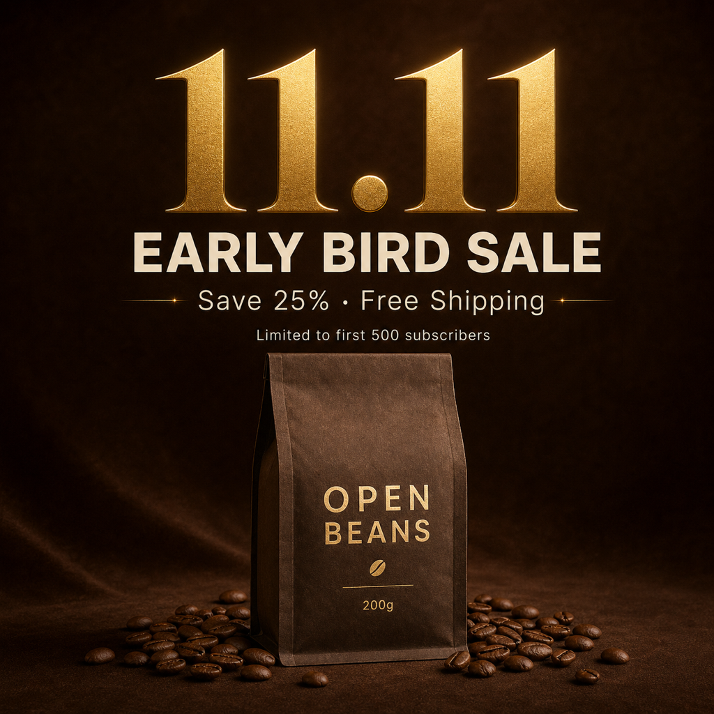

返回 CH6 模板速查站
(A2)
Campaign KV 系列主視覺
季度 / 節慶 / 雙 11 大促的「campaign 系列主視覺」。一個中央焦點視覺 + 一套延展 layout，可拓展成 banner / story / 短影音封面 / 海報。強調可複用、可成系列。
這張卡片你會學到
能判斷何時用 campaign KV（與 A1 web hero、A3 brand poster 的差異）
能拆解 6 段結構並產出可延展的中央焦點視覺
能識別 4 種踩雷（訴求語不夠強／延展性差／色板不統一／元素過多）
(01)
適用場景
這個模板用在哪
由 1 個中央焦點視覺主圖 + 1 套 layout system 組成的系列主視覺。重點是「可延展」——主圖能拆出 banner、IG story、short video 封面、海報、實體展板，所有衍生視覺都看得出是同一個 campaign。
典型客戶 / 交付物 品牌行銷部、季度 / 節慶 campaign、單次接案 NT$30,000-100,000、交付：1 anchor 主視覺 + 3-5 比例延展
四個典型用途：
- 雙 11 / 週年慶大促主視覺（電商最高頻、跨平台投放需求）
- 中秋 / 春節 / 母親節節慶 KV（本地品牌季節推廣）
- 新品系列發表主視覺（1 主圖 + 5-8 衍生延展）
- 聯名 campaign 主圖（兩個品牌共同視覺）
| 對比項 | 本卡片 · A2 Campaign KV 系列主視覺 | 近似模板 |
|---|---|---|
| 視覺主體 | 1 主視覺 + 1 套延展系統 | A1：單張 web banner；A3：單張海報 |
| 延展性 | 必含：1:1 / 9:16 / 16:9 預覽 | 其他模板：單一比例 |
| Claim | 強而短、品牌主張句 | A1：產品功能；A3：氛圍感 |
| 色板 | 嚴格統一（品牌色 + campaign 色） | 其他模板：較自由 |
| 使用週期 | 1-3 個月 campaign 期 | A1：常駐；A3：單檔 |
| 接案類型 | 中大型品牌行銷部 | A1：SOHO；A3：個人品牌 |
一句話判斷：客戶問「我這檔 campaign 要做什麼」走 A2；問「官網首屏」走 A1；問「單張海報」走 A3。A2 是 A 組裡接案規模最大的卡片——一個 campaign 報價 NT$30000-100000 是常態。
(02)
模板拆解｜6 段 prompt 結構
原模板把一個 campaign KV 拆成 6 段。核心難度在「延展性」——主視覺看起來好不夠、要能拆出多比例衍生：
| 段 | 段落 | 必問還是可預設 | 填什麼 |
|---|---|---|---|
| 1 | campaign 主題 + 訴求語 | 必問 | campaign 名稱 + 主張句（≤ 8 字、英文優先）+ 時間窗口 |
| 2 | 中央焦點視覺主視覺 | 必問 | 畫面中心元素（人物 / 產品 / 概念圖形）+ 構圖（中心對稱 / 黃金分割） |
| 3 | 色板 | 必問 | 品牌色 + campaign 專屬色（建議 ≤ 3 色）+ 強調色色 |
| 4 | delivery layouts | 必問 | 延展比例：1:1 IG / 9:16 story / 16:9 banner，每個比例 anchor 元素的擺放 |
| 5 | typography | 可預設 | 標題字（粗 sans）+ 標語（serif 或 sans 細體）；英文優先避字體覆轍 |
| 6 | 限制 | 固定寫死 | 禁忌：色板出現額外鮮艷色、字體超過兩種、anchor 元素在不同比例失焦 |
記憶口訣：主題 → 主視覺 → 色板 → 延展 → 字 → 禁。新手最常漏「delivery layouts」——只生 1 張 anchor、忘了確認衍生比例會不會裁切到關鍵元素。要明確寫「at least 3 aspect ratios」「safe area for square crop」。
(03)
示範圖｜可複製、可重現
下面這張是 OPEN BEANS 雙 11 大促 campaign 主視覺 1:1 anchor 版本。延展時把同 prompt 改成 9:16（IG story）、16:9（FB banner）、用同樣的 anchor 元素重新構圖即可。

完整 prompt · OPEN BEANS 雙 11 campaign 主視覺
請生成一張 campaign 主視覺 anchor visual（可延展為 banner / story / 海報的系列主圖）： 【Campaign 主題】OPEN BEANS 雙 11 早鳥優惠（11.11 Early Bird Sale） 【Anchor 主視覺】 - 構圖：1:1 正方形、中心對稱 - 中心元素：OPEN BEANS 200g 咖啡豆袋（深棕牛皮紙）+ 散落咖啡豆 - 背景：深棕絲絨漸變、暖光氛圍 【文案】 - 大字 claim：「11.11」（巨大數字、燙金、襯線粗體） - 主題：「EARLY BIRD SALE」（無襯線粗體、米白） - 副標：「Save 25% · Free Shipping」（細體、淺米色） - 小字：「Limited to first 500 subscribers」 【色板】嚴格三色：深棕主、米白底、燙金 accent。不出現紅色、藍色、綠色等鮮艷色。 【字體】標題用襯線粗體（avoid 新細明體）、副標用無襯線細體。全英文。 【風格】像 Apple 雙 11 主視覺那種克制感、不要淘寶廣告風。 【限制】嚴禁人物、嚴禁排版擁擠、嚴禁色板出現額外鮮艷色、嚴禁中文字、嚴禁 anchor 元素貼邊（要留 10% 安全區給後續裁切）。
讀圖時看這 4 個點：(1) anchor 元素夠不夠強（拆 9:16 / 16:9 還能認得是同 campaign）？(2) 訴求語是不是 ≤ 8 字夠精煉？(3) 色板有沒有限制在 ≤ 3 色？(4) 文案有沒有遮到 anchor？
(04)
改成你的場景｜踩雷與失敗案例
把 prompt 拿來、改 3 個替換槽就變你的版本：
| 替換槽 | 你的版本 |
|---|---|
| ⓐ campaign 主題 + 訴求語 = ? | 例：雙 11／中秋限定／週年慶／新品上市 |
| ⓑ anchor 元素 = ?（中心視覺） | 例：產品堆疊／單品特寫／象徵物（月亮、煙火、樹葉） |
| ⓒ 色板三色 = ? | 例：深棕＋米白＋燙金（咖啡）／中國紅＋金＋黑（春節）／粉＋灰白＋金（母親節） |
最常見的 4 種踩雷：
- 訴求語太長、不夠強 「我們提供最棒的咖啡訂閱方案讓您每天都有好咖啡」這種 30 字訴求語沒人看。解法：訴求語 ≤ 8 字、英文優先、動詞驅動。
- 延展性沒驗證 anchor 在 1:1 看起來好但拆 9:16 主視覺被裁掉。解法：prompt 加「safe area for vertical / horizontal crop」、「anchor centered with 10% padding」。
- 色板鎖不住 AI 自動加金黃 / 鮮紅做「節慶感」、毀掉品牌色板。解法：限制明確列禁用色 + must keep 三色、跑出來檢查每個像素是否在三色範圍。
- 中文 campaign 文案別指望 prompt 解決 AI 生圖工具對中文字體只給新細明體系。A2 的最佳策略：訴求語寫英文（11.11 Sale / Early Bird），中文 campaign 標語（「雙 11 年度最強優惠」）走 後製字體疊圖工作流附錄。
實戰提醒：A2 是「campaign 系列」，後製疊字流程要做 3 次（1:1 / 9:16 / 16:9 各疊一次）才完整。Figma 用 component 一次設計、三比例自動套用、效率最高。
交付提醒 本卡片的 AI 生成的示範圖不是可直接給客戶的最終交付品。中文商業案一律先用 AI 生出構圖（含英文佔位文字）、再走 後製字體疊圖工作流 在 Figma／Canva 疊上中文、最後校稿確認才交付給客戶。
本卡片改寫自 ConardLi／garden-skills 之
campaign-kv.md 模板（MIT License、2026），已對中文進行台灣用語在地化、加入本地接案情境與失敗案例。